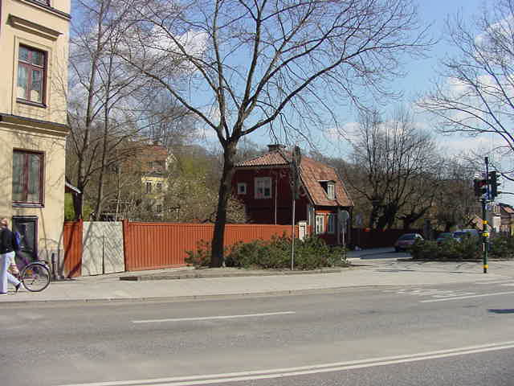
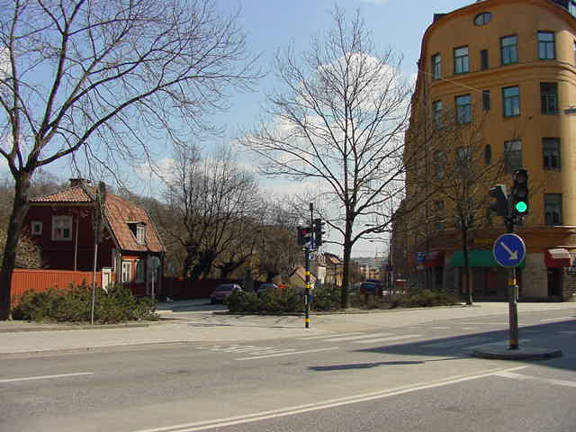

Södermalm i tid och rum

Trädgårdsmästarbostaden från norr tvärs över Renstiernas gata ned längs Malmgårdsvägen. Till vänster syns huvudbyggnaden.


Trädgårdsmästarbostaden från norr tvärs över Renstiernas gata ned längs Malmgårdsvägen. Till vänster syns huvudbyggnaden.
